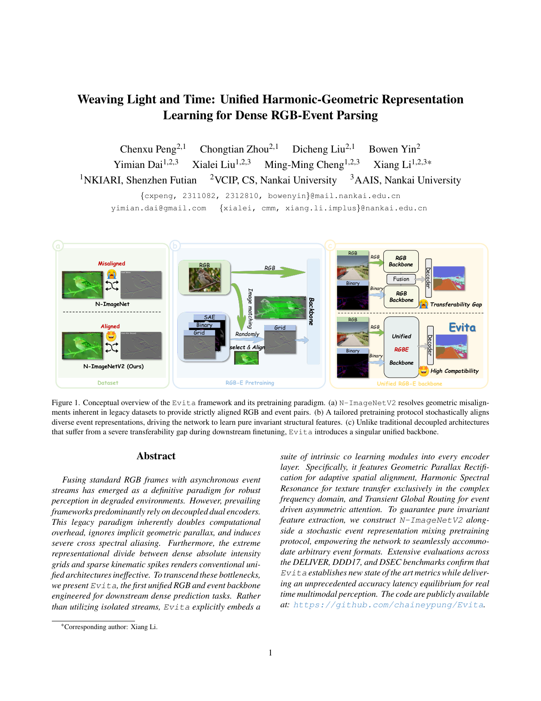

G
Geometric Parallax Rectification
An adaptive cross-modal deformable operator aligns event structures with RGB boundaries, correcting spatial offsets caused by asynchronous sensing.
A unified RGB-Event backbone that weaves photometric detail and microsecond event dynamics into one efficient representation for dense scene understanding.
RGB cameras provide dense texture but degrade under motion blur, low light, and extreme illumination. Event cameras capture brightness changes with microsecond latency, yet their sparse signals lack static appearance. Evita brings both modalities into a single dense-prediction backbone, replacing late dual-stream fusion with layer-by-layer cross-modal co-learning.

Evita does not merely concatenate RGB and event inputs. Each encoder layer addresses alignment, spectral transfer, and long-range routing explicitly.
An adaptive cross-modal deformable operator aligns event structures with RGB boundaries, correcting spatial offsets caused by asynchronous sensing.
Frequency-domain fusion injects event-driven high-frequency changes while preserving RGB phase structure, reducing noisy spatial aliasing.
Event features serve as dynamic queries that route global photometric context from RGB, improving semantic consistency in challenging scenes.
Across DELIVER, DDD17, and DSEC, Evita shows strong segmentation accuracy, efficient inference, and resilience to spatial misalignment.
A single RGB-Event backbone reduces the duplicated computation of conventional dual-stream approaches while keeping cross-modal interaction early and dense.
The paper introduces strictly aligned RGB-Event pairs and stochastic event-representation mixing, allowing the model to generalize across event formats.
Under simulated DDD17 event offsets, Evita-L drops by only about 0.18 mIoU at the extreme shift, showing strong geometric robustness.
RGB frames and asynchronous event streams enter lightweight modality stems.
Geometric rectification estimates local offsets and samples aligned event features.
Spectral resonance combines texture, edges, and transient changes with less noise.
Unified features are decoded into dense, stable scene understanding outputs.
When illumination, weather, speed, and sensor timing are imperfect, Evita offers a cleaner path toward robust multimodal perception for autonomous driving, robotics, and edge vision systems.